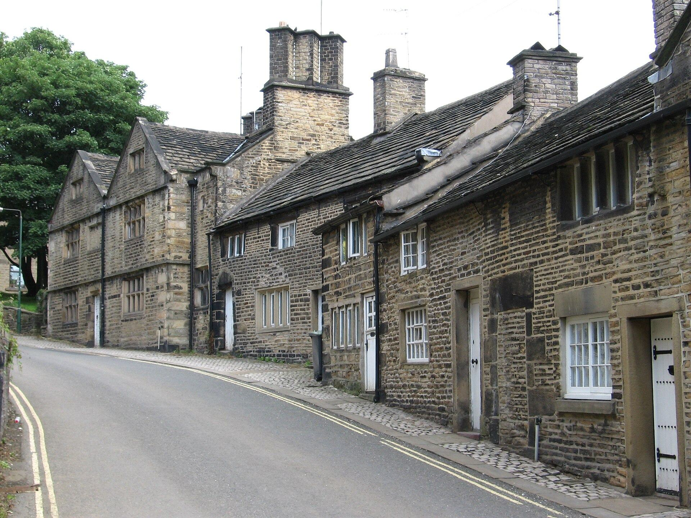
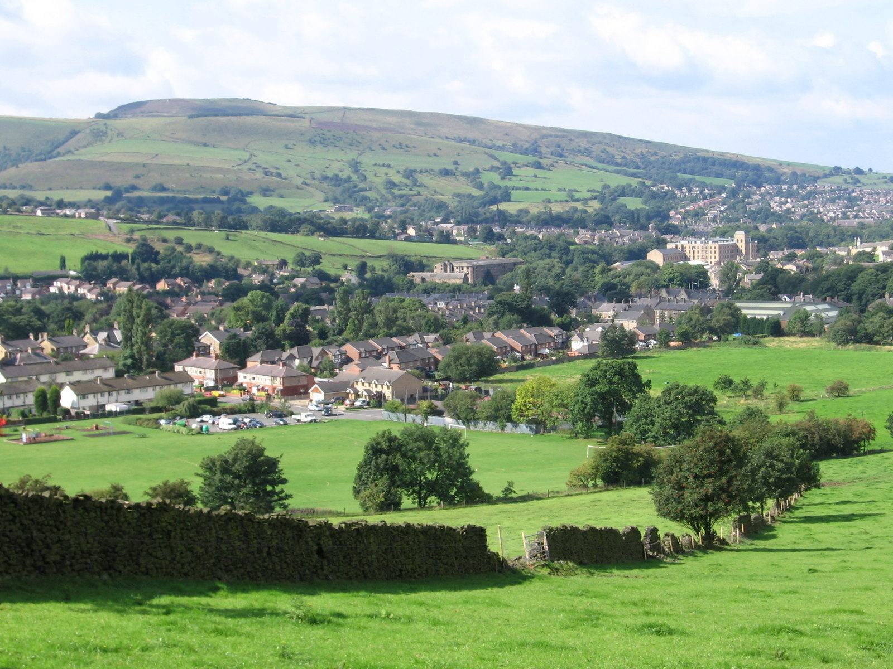
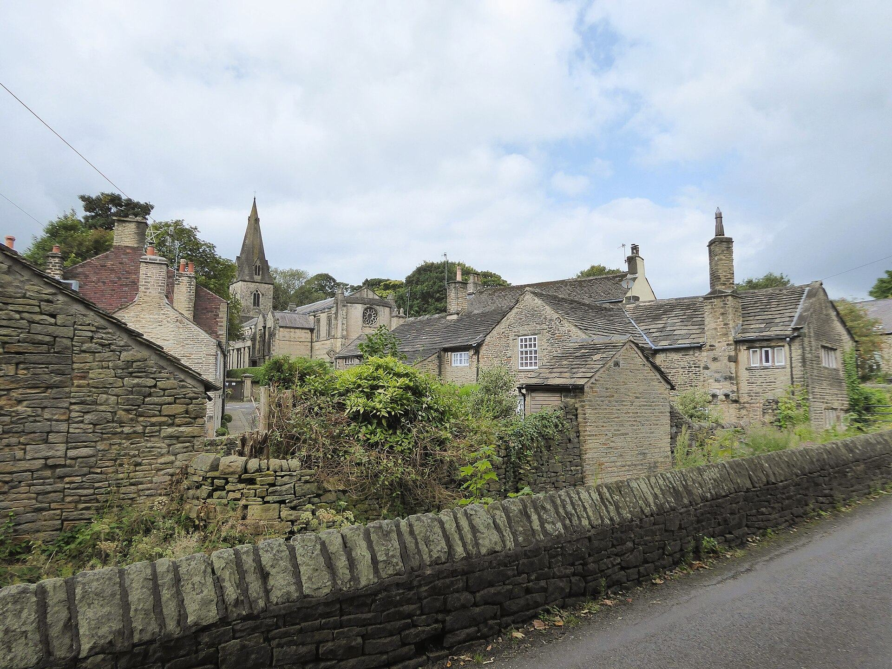
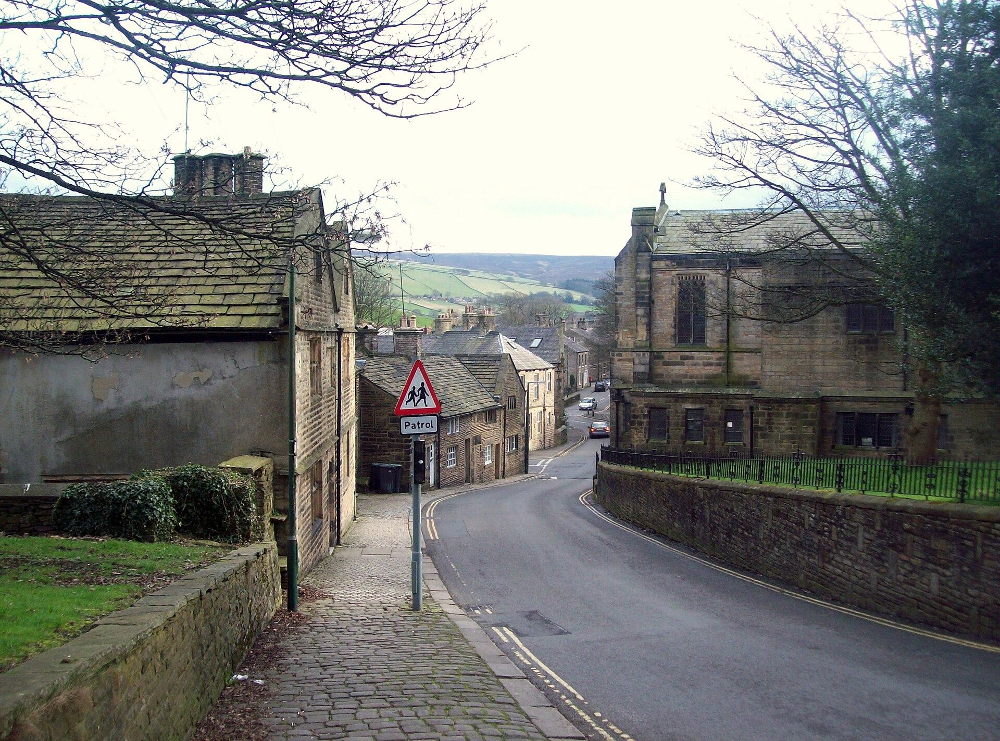
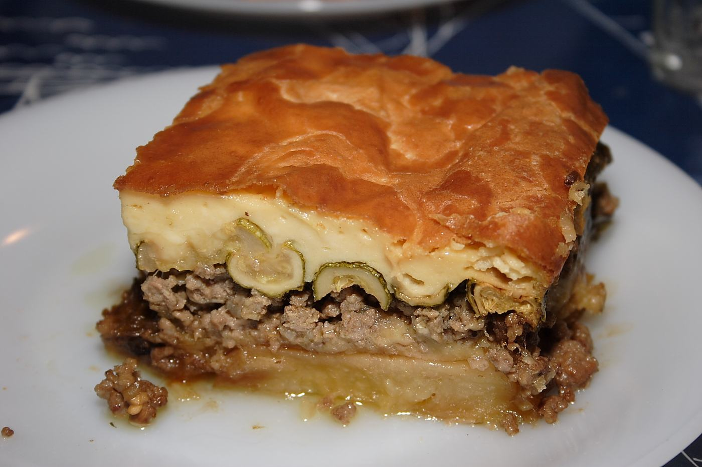

Food
English, with a Greek accent
We value homemade food. Close connections to Greece add a Mediterranean influence to traditional English dishes.
Design preview by GunaFix, not the official website of The Wheatsheaf. gunafix.com
Family-run pub · Old Glossop · by the Peak District
Homemade food with English roots and a Greek-Mediterranean touch, real cask ales brewed less than 300 metres up the road, and a beer garden by the Peak District.
Hours
Food
We value homemade food. Close connections to Greece add a Mediterranean influence to traditional English dishes.
Drink
A small bar with a wide selection of wines, beers and spirits, and real cask ales brewed less than 300 metres up the road.
Atmosphere
Soft background music and friendly service in a small, family-run country-style pub.
Outside
Enjoy the view from the beer garden, or pop in after a walk along the hills and reservoirs. Dogs welcome.
We are a small, family-run pub tucked away in Old Glossop. Since August 2018 we have worked hard to renovate the Wheatsheaf into a country-style pub where everyone feels welcome.
A little place to catch up with friends, meet colleagues, reunite with family or simply take a break from a hectic day, right by the Peak District.


Atmosphere photos are stock images (credited below), not the venue's own.



Hours
| Monday | 5pm–11pm |
|---|---|
| Tuesday | 5pm–11pm |
| Wednesday | 12pm–11pm |
| Thursday | 12pm–11pm |
| Friday | 12pm–11:30pm |
| Saturday | 12pm–11:30pm |
| Sunday | 12pm–11pm |
Food serving hours: Wednesday to Saturday 12:30–8pm, Sunday 12:30–7pm. Kitchen closed Monday and Tuesday.
16 Well Gate, Glossop, Derbyshire SK13 7RS
Call 01457 857008 or email glossopwheatsheaf@gmail.com to book a table for any occasion.